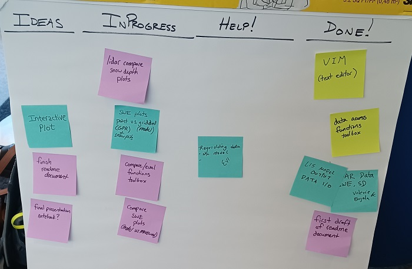

During the hackweek#
During the hackweek, project teams will have approximately 4 hours of dedicated time each day to work together. The following is a suggested roadmap for how to structure your time. While every team is unique and we encourage you to find what works best, we also think that nearly every team can benefit from the kinds of communication and meeting structures that we suggest here.
Day 1 of the hackweek: Getting started#
We facilitate project team formation session on the first day of the hackweek. During this time we will finalize project goals and objectives. Hackweek organizers and facilitators will help each team set reasonable goals and develop a roadmap for task completion.
Once your team is formed, we will have you find a location to work and sit down for your first meeting together. In our experience, this one of the most important moments of the entire week! Often people are feeling a mix of excitement about the potential for collaboration, worry about being in the “right” group, and concern for how the group dynamics might evolve. So, we offer here a structured approach that we recommend each team follows to guide your early conversations.
Step 1: Personal Reflection and Goal Setting#
It might seem counterintuitive, but we think it works well to start your time together with a few minutes of personal reflection. The purpose of this time is for each project member to get clear on their personal project and learning goals, and to briefly communicate that in writing to their teammates.
We ask the project leader distribute a 4 x 6 card and writing utensil to each team member and then have each person reflect on the following for 3 minutes (set a timer!):
PERSONAL CHECK-IN
What are my learning goals for the week?
How do I work best?
What skills / background am I bringing to this work?
Why is this work important to me?
What conditions do I need to thrive?
How will I know I’ve had a successful hackweek?
Next, each person should take another 3 minutes to write some of this information on your card. Start with your name and preferred pronouns, if you wish. Then include other information from your reflections above. Get creative, and don’t worry about capturing everything. Use words or sketches as you like!
Finally, give each member of your team up to 1 minute each (keep it short!) to share their name and a couple of items from their card. Be sure everyone has a chance to share. When you’re done, keep your card in an accessible, readable location on the table so that others can look at it throughout the afternoon.
Step 2: Group Norms and Process#
Next, let’s have a 10 - 15 minute conversation (depending on team size) about the group culture we hope to create during the week.
GROUP PROCESS CHECK-IN
How will we be making decisions?
Who decides what tasks will be worked on?
How will we navigate conflict?
How will we recognize / attribute effort?
Step 3: Brainstorming Tasks#
Now that the team has had a chance to get to know each other and talk about your process and systems, it is time to begin identifying tasks.
CREATING A TASKBOARD
All team members are encouraged to contribute here. All ideas and perspectives are needed.
List the tasks that will need to be done (starting with any that the project leader may have already identified).
Identify any clusters of common tasks or tasks that must be completed sequentially.
Team members volunteer for tasks that match their personal goals and interests, identify opportunities for working in pairs or small groups.
Identify if any tasks require skills or knowledge that the current team does not yet have (the project team helper may be able to connect you with someone to provide those skills or knowledge).
{kind=link}
Step 4: Project Management Systems#
We’re now ready to transfer everything we’ve done so far into our project management tools!
Note
Set up team organization infrastructure on Slack and GitHub (see Organizing your project on GitHub).
Project work begins!#
Usually teams need at least 1 hour to work through all the steps above. You can think of this as building a strong foundation for the work that happens throughout the rest of the week.
Warning
It’s common for teams to dive into the project work too early. Do you know the names of every person in your group? Have you heard from everyone about their learning goals and ideas for the project tasks? If you answer “no” to any of these, we recommend you take a bit more time working through the activities above. It will pay off for you later in the week!
As progress is made, project outputs (code, notebooks, figures, documentation, etc.) are recorded in the team’s GitHub repository (a good place for team members to get started is by making their own folder under the contributors directory).
All team members check back in at the end of the day, review progress towards tasks, anything preventing progress, and planned next steps
Project leaders may also want to share with the whole hackweek group: How the project is coming along, what are the objectives and tasks identified by the team today, and what other skills might your team need to be successful?
Days 1-5: Standups#
A “standup” meeting model may be useful for your team to check in at the beginning and end of each day of the hackweek. During these short meetings, each team member is given a minute or so to briefly share 1) progress they have made on their tasks, 2) anything preventing progress, and 3) what they plan on working on next.
The goal of these “standups” is to make sure everyone has the resources and support they need to achieve their hackweek goals - it can be hard to ask for help when you’re working with a new team!
Begin each day with a team meeting to discuss:
Progress made on the previous day
Anything preventing progress
Tasks for this day
Check back in at the end of the day:
Progress made today
Anything preventing progress
Planned next steps for tomorrow
Organizing this information on a four-column chart (ideas, in progress, need help, done) with sticky notes (or a virtual chart) may be useful, such as the example below.
{kind=link}
Day 5: Sharing results#
Begin the day with a team meeting to discuss:
Progress made on the previous day
Anything preventing progress
Tasks for this day
Decide what time to stop work and organize material to present
Organize material to present (push changes to repository, update README, etc.)
Each team will have about 15 minutes to present all the things you did and learned during the week, recognize and celebrate individual contributions to the group effort, what challenges arose, what might be worth trying next